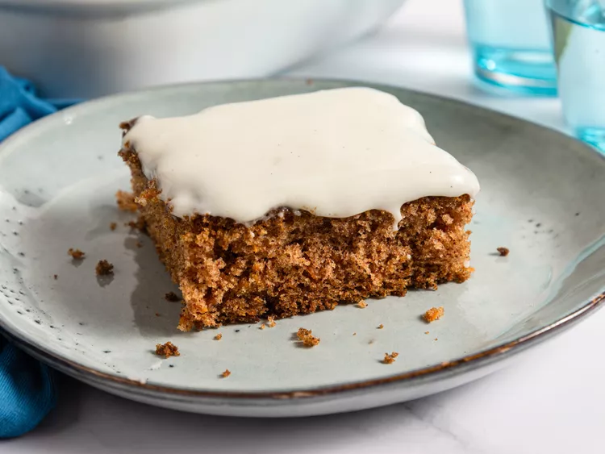
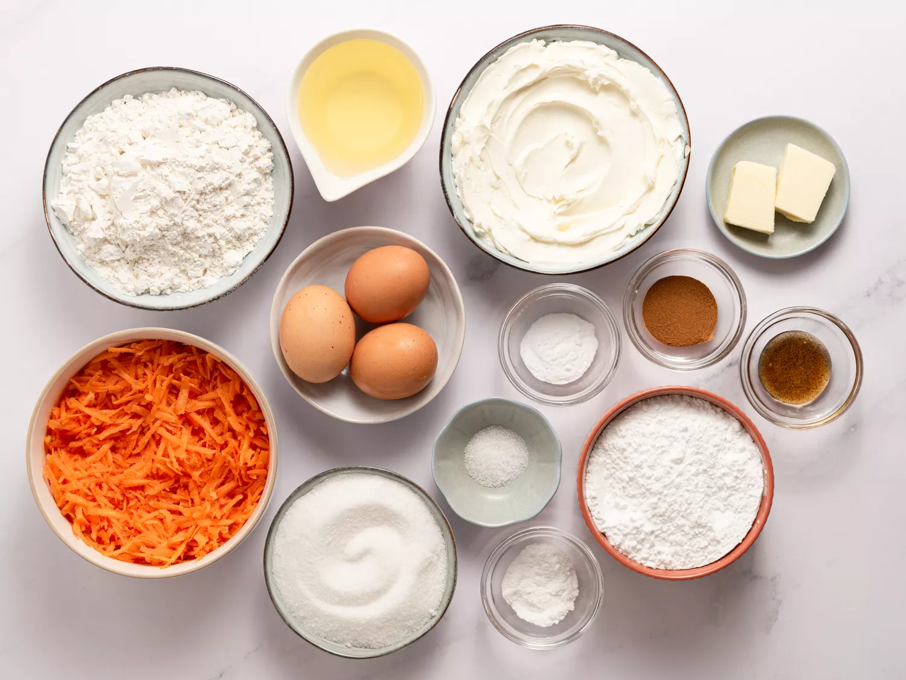
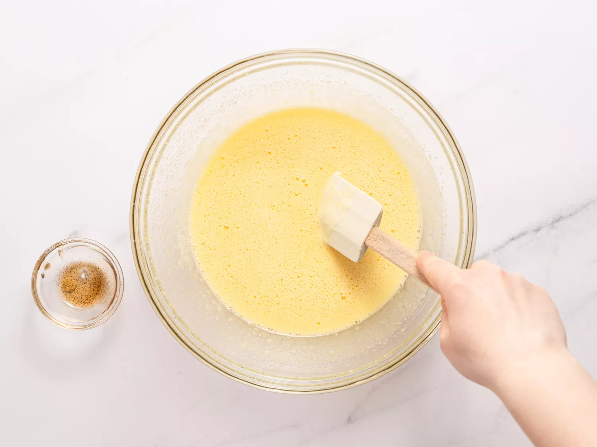
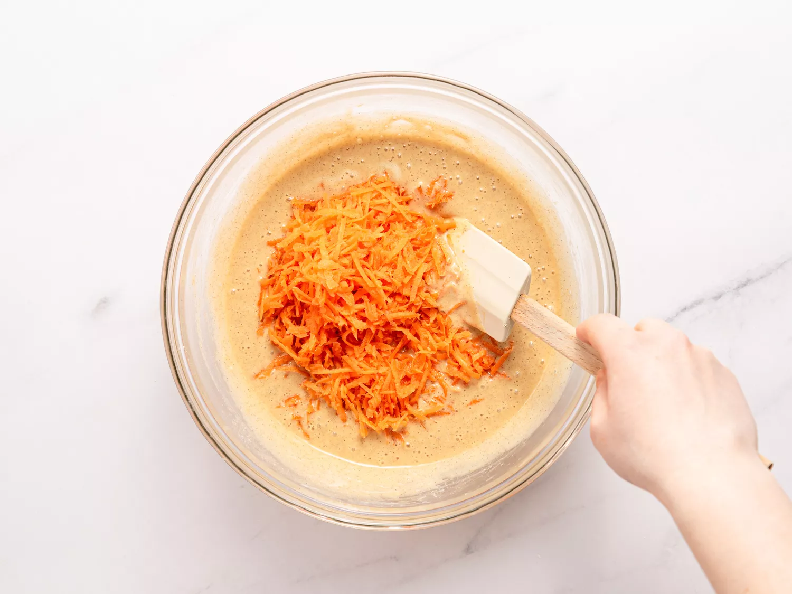
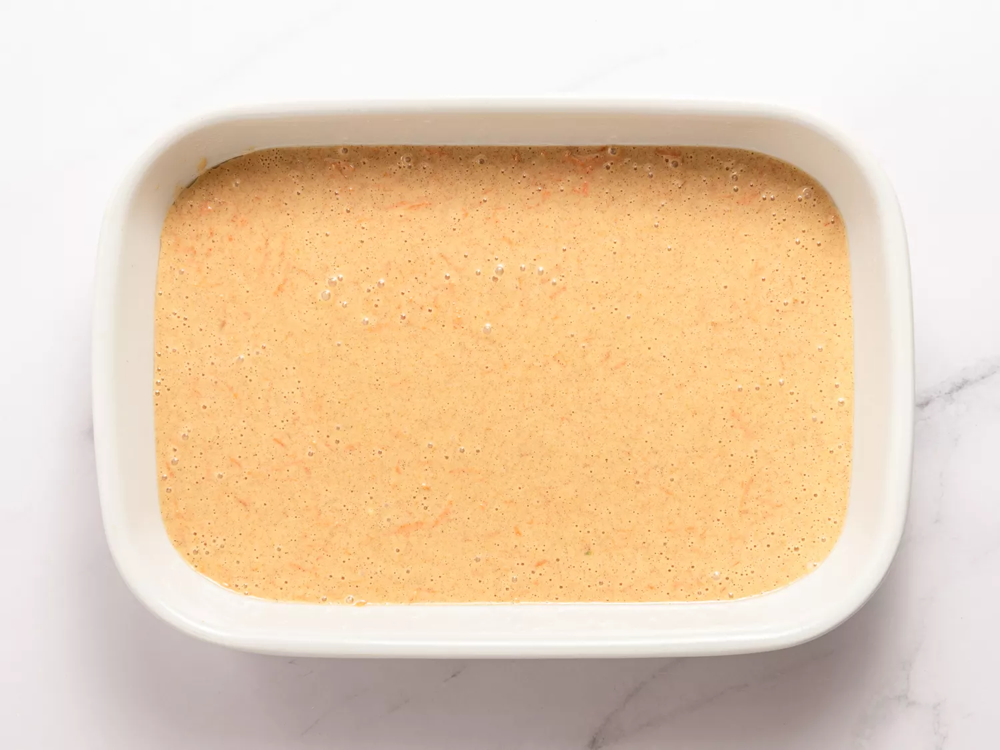
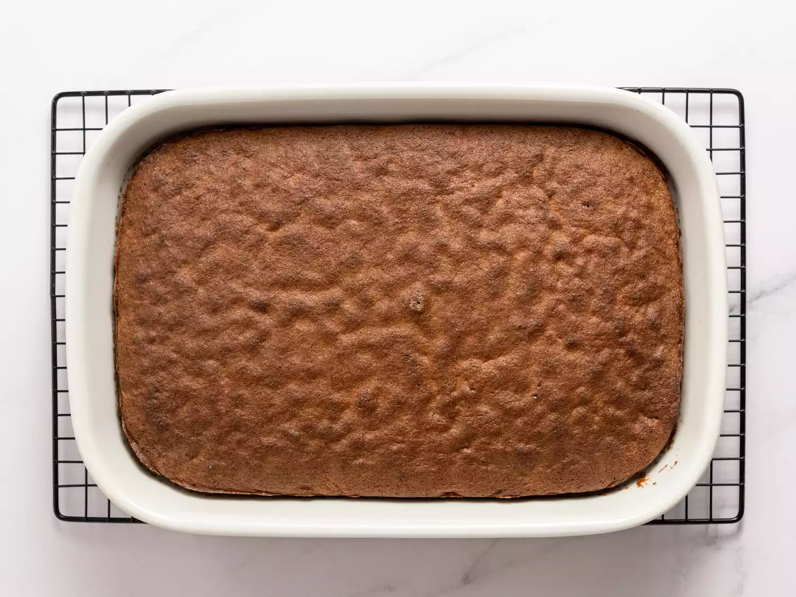
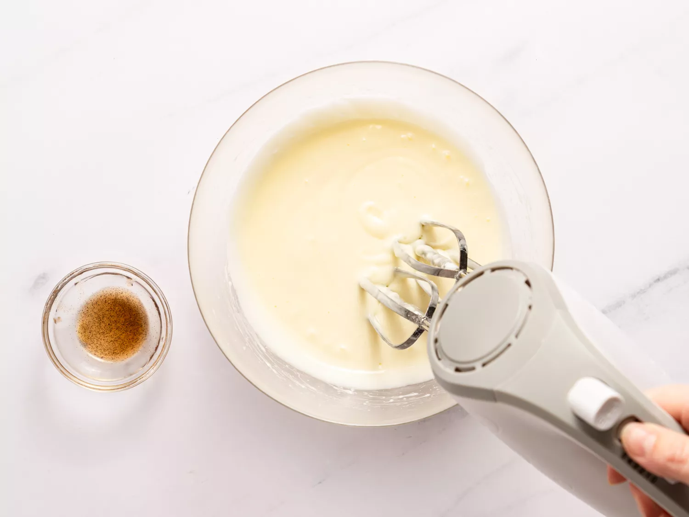
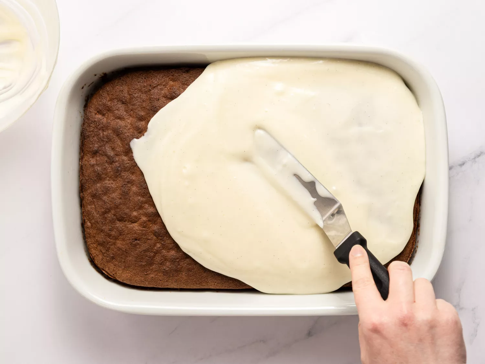
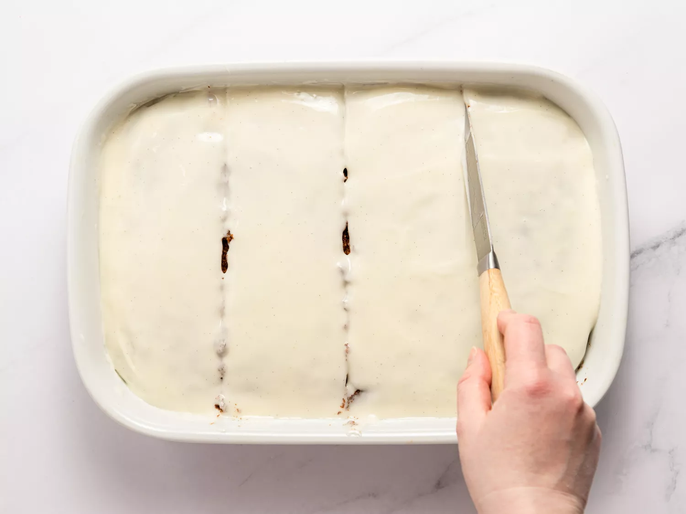

This gluten-free carrot cake is so moist and delicious. I have made it for many people over
the years and they can't believe how soft and tender it is for a gluten-free cake. Top it with
my fluffy homemade cream cheese frosting for a real treat!
Gather all ingredients. Preheat the oven to 350 degrees F (175 degrees C). Grease
a 9x13-inch baking dish.

To make the carrot cake: Beat sugar and oil together in a bowl using an electric
mixer until smooth and creamy. Beat in eggs one at a time, mixing well after
each addition. Stir in vanilla.

Combine baking flour, baking powder, baking soda, cinnamon, and salt in a
separate bowl; beat into egg mixture until batter is smooth. Fold in carrots until
incorporated.


Bake in the preheated oven until a toothpick inserted into the center comes out
clean, about 35 minutes. Allow cake to cool completely for at least 30 minutes.

To make the icing: Beat cream cheese and butter together in a bowl using an
electric mixer until well combined. Beat in confectioners' sugar, a little at a time,
until icing is smooth and creamy. Add vanilla and beat well.


